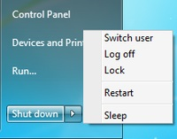
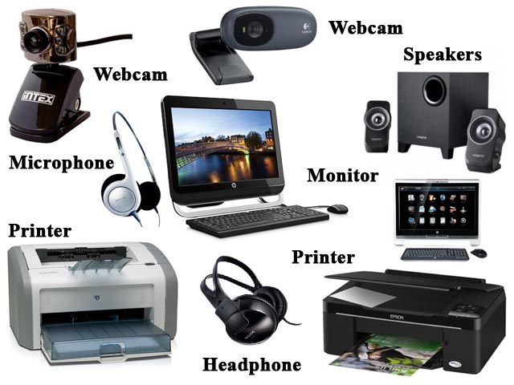
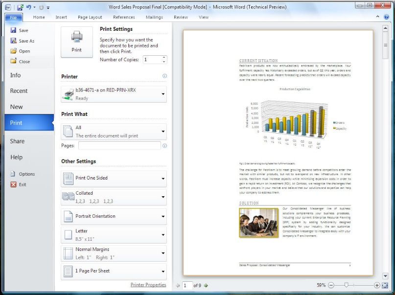
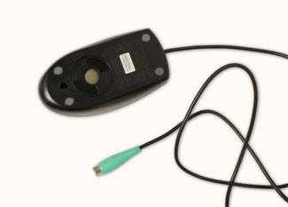
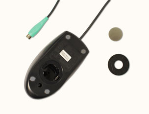
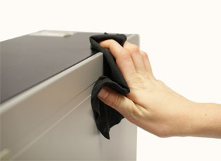
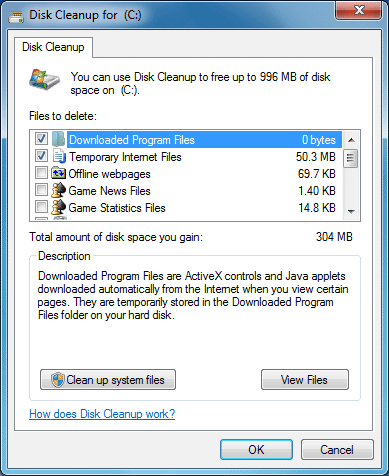

ICCES Manager training: Basic Computer Skills and Maintenance¶
The story of modern electronic digital computing should start with Alan Turing, the man for whom the Turing Trust is named. Turing published a paper in 1936 On Computable Numbers, with an application to the Entscheidungsproblem. The paper proved that you could build a machine capable of processing a digital stream of 1s and 0s according to programmed instructions and it would be capable of solving any computable problem. As it happens, the set of problems included in this definition is the universe of mechanically solvable problems. Hence, the Turing Machine is also known as the Universal Machine, the theoretical precursor to the electronic digital computer which we use today.
So what is a computer? The computer’s like the human brain. Your brain’s there inside your body and controls everything your body does, but the only way you can see it is if you take a look inside your head. When it comes down to it, the computer is a brain, too; it’s a tiny chip inside a machine such as a desktop or a laptop, a phone or a car, which, with your help, controls how the machine works. You don’t need to know how the chip does its job. It does what it’s told, using instructions programmed into it by people who know how to tell it what to do.
So the way the computer works is really quite simple. The computer (the tiny chip) receives input in the form of data, which it processes according to programmed instructions, and then outputs the processed data in a form that meets our needs. Input-Processing-Output (IPO). That’s it. The computer repeats this IPO process over and over again, millions of times a second, to produce something useful for you and me.
Software, programs such as a word processor or a video game or a spreadsheet, runs on the computer and accepts input from people like you and me. The input can also come from other computers if it’s connected to a network like the Internet. Input can even come from sensors that have been set up to capture data from the environment (like weather sensors, or traffic sensors, or cameras, and so on). Inside the computer are what are called processors, which accept the input and process it according to the instructions in the program (the software). After the processing is complete, the computer outputs the processed data onto some kind of output device, such as a screen, or a printer, or a speaker, depending on what you, the user, want it to do.
Who would have thought that such a simple machine could do all the wonderful things that we rely on computers for today? Most manufacturing today is done on machines controlled by computers. Most office work is now handled by computers. Hospitals rely on computers to manage all that patient data and to process all those medical tests and screenings. Every car on the road has dozens of little computers inside, monitoring the car’s performance; the same for planes and trains, and ships and spaceships. The internet (and your phone now relies on the internet) has transformed our world into a global village, where everyone everywhere is now no more than a few seconds away from everyone anywhere else in the world. We go shopping on the Internet; we use the Internet to find out anything we want to know.
And we’re just beginning to discover what the computer can help us do!
Part I: The Components of a Computer & Basic Operations¶
Chapter 1: Hardware¶
Turning the computer on¶
Booting
Booting your computer is the process of starting or restarting it and starting the operating system. Turning it on may include turning on the screen as well as the computer. If the screen is separate from the computer, you will need to turn on the screen first so that you can see what’s happening when you turn on the computer itself.
Hard and soft boot
A hard boot is when you start the computer using the power button (see left Figure below). This is also sometimes called a cold boot, because the computer is not yet warmed up by the flow of electricity. A soft, or warm, boot is when you restart the computer without turning it off. You do this using the Restart option in the Start Menu (see right Figure below).

The Processor¶
ALU—the Arithmetic & Logic Unit
All you need to know about the ALU is that it’s the central “brain” of the computer; it does all the computation that the software tells it to do. As such, it’s the most important component in a computer, though it’s the one we’re least aware of.
Memory
The computer would be just a useless machine without somewhere to store all the data used during the processing done in the ALU. Memory enables the computer to store and save the data before and after processing.
There are two types of computer memory: Primary memory and Secondary memory.
Primary memory (RAM and ROM)
Primary memory is really part of the ALU. Read Only Memory (ROM) contains special programs the system needs to start itself up during the boot process explained above. These programs, such as the Basic Input-Output System (BIOS), are hardwired on the chips inside the ALU (see Figure below).
Intel’s Core 2 Duo logic board
Random Access Memory (RAM), also called working memory, is made up of a lot of other chips, all interconnected, which, at any one time, contain the programs (software, applications like Word or Internet Explorer or a video game) that are actually running on the computer when you’re using it to do work, or when you’re playing video games, and so on.
Secondary memory
This is the memory that you have on the computer’s hard drive, or on your USB drive, or on CDs and DVDs, or Flash memory cards, like the ones in your camera (see Figure below).
There are lots of types of Secondary memory, even what they call “The Cloud,” which is Secondary memory that companies like Google or Microsoft manage for you so you can store all your data (photos, video clips, Word documents, Spreadsheets, etc.) out there on the network. We’ll talk more about networks in a bit. There’s no limit to the size of Secondary memory; it’s literally as big as you want it to be so you can store all your stuff. We’ll talk about how to sensibly store all your stuff in a bit, too.
Input devices¶
A picture tells a thousand words, so he’s a picture which illustrates all the different types of input devices (see Figure).

The Keyboard
The most traditional input device.
Mouse
The input device that is now commonly part of the Graphical User Interface (see Part I, Chapter 3, p. 11).
Touch pad
Most common on laptop computers, used with your finger or a stylus instead of the mouse to scroll and move the mouse pointer on the screen.
Touch screen
Most modern mobile phones use a touch screen so you can scroll through pictures or text on the phone’s screen. But now regular desktop and laptop computers come with touch screens if you have the latest Microsoft operating systems.
Microphone (voice input)
A microphone can be plugged into your computer, or it can come built-in to the computer screen, so you can speak into the computer and record your voice, or send your voice over the network when you’re chatting with someone online.
Camera (video input)
A camera is now more often than not a part of your computer screen, and certainly built into any modern mobile phone, allowing you to take pictures or video that you can share with others on the network, or simply store for your own use.
Scanner
The scanner (illustrated on the previous page) allows you to make a copy of any paper document or picture and scan it into the computer as a digital image made up of thousands or millions—even billions—of bits or pixels, depending on the quality of the scanner’s resolution. A pixel (PIcture Element) is another name for one of the dots that make up the scanned image. The more dots, the better the resolution. Low resolution (thousands of bits) is not nearly as sharp an image as high resolution (millions or billions of bits).
Output devices¶
A picture tells a thousand words, so he’s a picture which illustrates all the different types of output devices (see Figure).

The Screen (Monitor)
The computer screen (or the display on a mobile phone) is the most traditional computer output device.
Speakers (voice output)
Speakers are built into your computer so you can listen to music or speech, or hear someone you’re chatting with over the network when you’re online.
Camera (video output)
A camera (such as a webcam) is built into most every modern computer—desktop or laptop or phone—so you can see who you’re chatting with online, or play back video that you’ve captured using the camera.
Printers
There are all kinds of printers. The most traditional printer is the one attached to your computer, whether it’s inkjet or laser. Inkjet printers are cheap and provide pretty good colour images, but laser printers are much higher resolution and also produce the printout much faster than an inkjet printer. But today they have 3D printers—printers that actually MAKE THINGS like models and all kinds of 3-dimensional objects. Hold onto your seat, but they’re now using 3-d printers to make human body parts (from stem cells)! Yes, it’s mind-boggling, like so much to do with computer technology.
Communications¶
Communication is not the same thing as Communications.
Communication, without an “s” on the end of the word, is all about the art of communicating using writing (in books and magazines, etc.) and speech (where one or two people are chatting together or where an audience is gathered for a formal or informal address). Communications with an “s”, on the other hand, is all about using electronic media, such as those we’re going to discuss in this section, for the purpose of Communication. It’s a subtle difference, and one of which most people are unaware, but it’s good to know, all the same.
Networks (LAN and WAN, wired and wireless)
In general, electronic media such as the phone and so forth operate over networks, which can be Wide Area Networks (WANs), linking people in a village or a town or a city or a nation or between nations, and Local Area Networks (LANs), linking people in the same house or the same building. LANs are usually linked to WANs. Today we think of the whole world as one big networked planet. The WANs and LANs are linked together either over physical wires and cables strung from telegraph poles or buried underground or even running along the ocean floor, as well wireless transmissions via satellites orbiting the earth and microwave towers dotted over the landscape.
Phone
Today, the modern phone works hand-in-hand with the Internet. It’s become what they call an “Edutainment device”—something you can use not just for chatting with your family and friends and business associates and so forth, but also to access the Internet (see next section), to go shopping, to book airline flights and call a taxi, and even to watch movies. You can also use it to write memos and so forth (see personal organizers in Part I, Chapter 2). The modern phone is rapidly becoming something that you really cannot be without, which is why they’ve become mobile, of course.
Email is a method of exchanging digital, computer-based messages from an author to one or more recipients. Modern email operates across the Internet. The neat thing about email is that it enables you to send messages more or less instantaneously around the globe. By contrast, traditional mail (using the Post Office) is still relatively slow, which is why it’s called snail mail!
Internet
So the Internet is the mother-of-all communications devices. It incorporates phone technology and, with the rapidly increasing number of apps (applications) that are being written for it, the Internet-capable phone, as a mobile device, is becoming an integral part of all aspects of our daily lives. It’s like you really want to pick it up and go. Yes, you can access it on your desktop computer, but you can’t take your desktop with you. You want it in your pocket or your purse, and that’s where it will soon (easily within 10 years) be for almost everyone alive on the planet. Already, in 2014, almost 90% of people on earth have a mobile phone—that’s 9 out of 10 people. It’ll be closer to 100% by 2014, guaranteed.
Skype
Skye is a free internet telephone service which incorporates video as well as speech. It is pretty good, too, though the images are not as sharp as if you pay for it using a subscription service, and the sound quality may not be so good either. But it is a free video phone service.
Social Media
Some of the more popular apps available on the internet are what are called Social Media—Facebook, Twitter, Instagram, and so on. These apps make it very easy for you to interact all day and all night with family and friends—if you can afford the internet subscription. The world is becoming a tiny village where anyone anywhere can quickly and easily touch base with anyone else. This is changing the way we live.
Chapter 2: Software¶
Software Applications in general
An application is a computer program designed to help people use the computer to perform an activity. Examples include an accounting system, a library management system, a phone network management system, a manufacturing control system, an image processing program such as Adobe PhotoShop, video games of all kinds, and so on.
There are literally thousands of applications such as these, and more are being written by programmers every day.
Office Productivity Software
Office productivity software, such as Microsoft Office, has been designed to standardize applications such as word processing, spreadsheets, database management, and presentation software, as well as drawing and personal organizer software. Standardization means that each of these office productivity tools has a similar look and feel, which makes them easier to learn and use.
ICCSE, in collaboration with The Turing Trust, is making available a separate set of tutorials to help you learn many of the features of these Office Productivity tools. Let’s briefly take a look at each of them now so that you know what to expect when you work your way through the Office tutorials.
Word processing
A word processor, such as Microsoft Word or LibreOffice Write, is designed to help the user with the composition, editing, formatting, and sometimes printing of any sort of written material, such as letters, papers, memos, résumés and curriculum vitae (CVs), contracts, advertising flyers and other signs, greeting cards of all kinds, and so on. The most useful features of a word processor are that (a) it makes correcting mistakes easy; and (b) it makes editing, updating, and formatting of text a snap once you’ve learned how to use the software. Above all, the word processor makes you look good!
The Spreadsheet
Historically, spreadsheets were maintained in accounting journals or ledgers. They date back to the 14th and 15th centuries. Nearly 500 years later, in 1978, Dan Bricklin, a young graduate student at the Harvard School of Business in the USA, came up with the idea for an interactive spreadsheet and, together with Robert Frankston, developed the first computer-based electronic spreadsheet application (called Visicalc).
Pretty soon, every large and small business in the world wanted an electronic spreadsheet to help them manage their business accounting. And not long after that, the application (called Excel in Microsoft Office, Calc in LibreOffice) was being used to manage any kind of columnar/tabular data, such as weather info, scientific/research data, even simple apps like an address book or a CD collection. It has all kinds of built-in mathematical functions and formulas, along with easy-to-use formatting and layout tools. Think of it like a word processor for lists of data, whether the lists be numbers or text.
Database Management
A database is an electronic storage system that holds any and all data that you need to access and use. A database Management System is a collection of programs that enables you to store all that data, modify it, and extract information from the database. “Knowledge is power”; data is the raw material of knowledge. But data is only useful if you can easily access it and use it to help you in your daily life. That’s where a database like Microsoft Office Access or LibreOffice Base comes in handy. It’s like a library that’s organized in such a way that you can use it to answer questions and accomplish tasks that would be very hard, if not impossible, without it.
Presentation Software
Presentation software such as Microsoft Office PowerPoint or LibreOffice Impress, are tools designed to help you present data in the form of multiple media—multimedia—that might be text, still images, video and/or sound. Presentations are not designed to teach as such; rather they are designed to help you teach. But they may, nonetheless, be useful as standalone tools for presenting useful information.
So, computer-based presentations have various uses. A good teacher or presenter will often want to use audio-visual multimedia material to help the members of his or her audience to learn. Computer-based presentation tools enable the presenter to gather together this instructional media and organize into attractive, eye-catching, audio-visually appealing slides that are more likely to engage the audience’s attention and understanding than simple speech.
A well-designed computer-based presentation can also be displayed online or in the foyer of a building to give the viewer an overview or description of some topic of interest, such as a company or university’s history and goals.
Drawing/Graphics Tools
Each of the Office applications is designed for a particular purpose. Excel is a number cruncher, Word is a powerful word processor, and PowerPoint is a presentation application extraordinaire. Although you use the different Office applications for different purposes, graphics—images, shapes, and clip art—are used for pretty much the same purpose in all the applications.
Graphics enable you to enhance information and add interest to the spreadsheets, documents, and presentations that you create. In MS Office or LibreOffice, the commands and tools used to insert and modify images, shapes, SmartArt graphics, and clip art are very consistent across the different applications in the Office suite. So, if you know how to use graphics in Word, you can apply that knowledge to another Office application, such as PowerPoint.
Chapter 3: The Graphical User Interface (GUI)¶
WIMP
The key features of GUIs are the Windows, Icons, Menus, and Pointers (the components of the so-called WIMP interface) which are now common to all types of computers—whether it’s a desktop computer, laptop, tablet, or phone.
Touch screens have now been added to the GUI mix, and the point is that these interaction tools have made it possible for more or less anyone to use a computer—even children as young as two years of age.
So you have no excuse for not becoming skilled in the use of a computer. All you have to do is practice and, as we all know, practice makes perfect! You’re no doubt already familiar with the GUI from your experience using computers at various times and in various places during the course of your life. It’s hard to avoid computers these days. But you might like to learn some of the keyboard shortcuts that by-pass the GUI and let you get things done more quickly than if you use the mouse and point and click.
Quick keyboard shortcuts
Take a moment to try out each of the shortcuts illustrated in the Figure below, and keep this Figure handy for future use.
Chapter 4: Working with Files¶
In computer terminology, a file is any kind of digital object[^1] that you have created using the computer. Over the years since the digital computer was invented by Alan Turin in 1936, people have come up with various ways of using just 1s and 0s to represent text (the characters on the keyboard), still images and video (which is really just still images running rapidly one after the other to create a motion picture). It is also possible to use 1s and 0s to represent sound and even smells (scents) and tastes (there are computers that have been programmed to taste wine, for example).
The most common files that you are likely to create and save are text files and image files (photos, charts, drawings, for example), and you’ll also often store files that combine text and images. If you learn to use Office Word, you’ll be creating mostly text files, though you’ll sometimes include images among the text. If you learn to use Office Access, you’ll be creating and saving database files. If you learn to use Office Excel, you’ll be creating and saving spreadsheet files. And if you learn to use Office PowerPoint, you’ll be creating and saving presentation files.
Creating files
Every time you take a photo with your phone or any modern camera, you’re creating a file. It’s a digital file in one of several image formats, such as .jpg, or .gif, which is automatically saved with a default name on the memory card in your camera or phone. Every time you use Office Word to Open a New Blank doc, you’re creating a file, which is empty until you type some text into the document, such as a letter, and this new file, too, is saved with a default name—unless you name it yourself.
Naming and renaming files
Naming files is VERY important. Who knows what an image file called DSCN1525 contains? That’s the kind of default name your camera or phone gives to the photo files you take. What you should always do, when you upload the pictures from your phone or camera to a computer such as a desktop, laptop, or tablet, is rename the picture files with a name that describes in a couple of words what the picture is all about. Likewise, if you have a Word document on your computer with a default name that doesn’t describe what’s in the document, you should rename it. This is easy enough to do.
As illustrated below, the computer stores all your files in a hierarchy of folders:
The easiest way to rename a folder or file is by right-clicking on the name of the folder or file, which brings up what’s called a Context menu (see Figure).
So whenever you right-click on any object on the screen a Context menu pops up, which gives you a menu of options that you can carry out on the object you’re pointing at—such as the option to Rename the file called DSCN1199. In the Context menu, you select the option to Rename, and the system highlights the name of the file in blue. Now all you have to do is type the new file name and hit the Enter key on the keyboard. Easily done.
Saving files (Save and Save As)
When you create a new document in Word or any of the other Office programs, and you go to Save the file, Office will assume that you’ll want to give the new file an appropriate name. So it will display the Save As dialog box to prompt you to do this. Notice (see the first Figure below) that Office automatically chooses a file name based on the first few words of the new document you’re saving. At this point you also have the opportunity to decide where you want to save the file—on the desktop or in one of the folders you already have on your disk drive. You’ll have the opportunity to practice doing this many times when you work your way through the ICCES Office tutorials.
While this Office default name is still highlighted in Blue, you’ll go ahead and type a file name that briefly describes the content of the document—in this case Application Letter—and then, still in the dialog box, click on the Save button (see Figure below).
Organizing files
As illustrated above on pages 14-16, you really should be careful to give good names to your files and organize them all into folders on your disks so that they are easier for you to find when you need them. It can be a pain to do this, but in the long run you’ll be glad you did. When you work your way through the various ICCES Office tutorials, you will have lots of opportunities to practice doing this, so you don’t need to worry about the process at this time. Just be aware that it is IMPORTANT, in the same way as it’s important that you store things in your house in some tidy fashion so that you know where everything is.
Deleting files
Deleting files is a bit like the process of cleaning house. After a while you’ll have hundreds, even thousands, of files on your disk drives. You may well have duplicates of files all over the place, or you may have files that you no longer need or want. Deleting them is easy to do. Basically it’s the same process as when you rename a file. The easiest way to delete a folder or file is by right-clicking on the name of the folder or file, which again brings up a Context menu (see Figure).
This time, instead of Renaming the file, you want to Delete it. When you select the option to Delete the file, you’ll be prompted to confirm that this is what you want to do.
When you click on the Yes button, the file is still not actually gone altogether. Windows (the Operating System on your computer) puts the deleted file in the Recycle Bin on your desktop and leaves it there till you decide to actually throw it away by emptying the Recycle Bin. In other words, you can still recover the file if you want. To empty the Recycle Bin, you just go to the Desktop and right click on the Recycle Bin icon to bring up the Context menu (see Figure) and, in the menu that pops up, select the option to Empty Recycle Bin.
Part II: Basic Computer Maintenance¶
Chapter 1: The importance of keeping your computer healthy¶
A computer is an expensive piece of equipment, and as with all big purchases you will want to protect your investment. A computer can help your school progress. It gives you a means of writing reports, saving photos, accessing the internet, sending emails…. and so much more.
This booklet provides step-by-step instructions to help you prolong the life of your computer and to help keep it working at a consistently high level.
This booklet covers three main areas: keeping it physically clean, protecting it from malware, and backing up your important files. There is also a short section at the back detailing ways to prevent personal strain and injury which can result from long periods at a computer.
Chapter 2: Keeping your computer physically clean¶
The main natural physical threats to your computer are:
- Dust
- Heat
- Moisture
Any of them can potentially cause problems for your computer, leading to very costly repairs or even irreparable damage.
YOU are another threat to your computer. If you eat or drink in front of it, it is likely that some food or drink will end up on the keyboard of the computer, which could make some of the keys unusable.
It is good working practice to go away from your computer to get a drink or to have some food. Getting away from the computer every hour or so gives you a chance to move around and stretch your legs.
By cleaning your computer regularly, you can help to keep it working properly and avoid expensive repairs.
Cleaning the keyboard¶
A dirty keyboard doesn’t look nice and can cause your keyboard to not work properly. Dust, food, liquid, and other particles can get stuck underneath the keys, which can prevent them from working properly.
Check your owner’s manual to see if the manufacturer has provided you with instructions for your specific keyboard. If so, follow them. If not, the following steps are basic cleaning tips that can help keep your keyboard clean:
- Unplug the keyboard from the USB or PS/2 port. If the keyboard is plugged into the PS/2 port, you will need to shut down the computer before unplugging it.
- Turn the keyboard upside down, and gently shake it to remove dirt and dust.
- Use a can of compressed air to clean between the keys (see Figure above).
- Moisten a cotton cloth or paper towel with rubbing alcohol (surgical spirit), again turn the keyboard upside down, and use it to wipe clean the tops of the keys. Do not pour alcohol (or any other liquid) directly onto the keys!
- Reconnect the keyboard to the computer once it is clean and dry. If you are connecting it to a PS/2 port, you will need to connect it before turning the computer on.
Dealing with liquids
If, heaven forbid, you do spill liquid on the keyboard, quickly shut down the computer, disconnect the keyboard and turn it upside down to allow the liquid to drain.
If the liquid is sticky, you will need to hold the keyboard on its side under running water to rinse the sticky liquid away. Then turn the keyboard upside down to drain for two days before reconnecting it. The keyboard may not be repairable at this point, but rinsing the sticky liquid off of it is the only chance for it to be usable again.
The best way to avoid this situation is to keep drinks away from the computer area.
Cleaning the mouse¶
There are two main types of mice: optical and mechanical. Each is cleaned in basically the same way, although the mechanical mouse requires a bit more work.
- Optical mice require no internal cleaning since there aren’t any rotating parts; however, they can get sticky over time as dust collects near the light emitter. This can cause erratic cursor movement or prevent the mouse from working.
- Mechanical mice are especially susceptible to dust and particles that can accumulate inside the mouse, which can make it difficult to track—or move—properly. If the mouse pointer does not move smoothly, the mouse may need to be cleaned.
Before you clean the mouse, check the owner’s manual to see if the manufacturer has provided you with instructions for your specific mouse. If so, follow those instructions. If not, the following steps are basic cleaning tips that will help keep your mouse clean.
- Unplug the mouse from the USB or PS/2 port. If the mouse is plugged into the PS/2 port, you will need to shut down the computer before unplugging it.
- Moisten a cotton cloth with rubbing alcohol, and use it to clean the top and bottom of the mouse.
- If you have a mechanical mouse, remove the tracking ball by turning the ball-cover ring counterclockwise. Then clean the tracking ball and the inside of the mouse with a cotton cloth moistened with rubbing alcohol.
- Let all of the parts dry before reassembling and reconnecting the mouse. If you are connecting it to a PS/2 port, you will need to connect it before turning the computer on.
If you just want to give the mouse a quick cleaning, place it on a clean, white sheet of paper and move the mouse back and forth. Some of the dust and particles should rub off onto the paper.
Cleaning the monitor¶
Dirt, fingerprints, and dust can make your computer screen difficult to read. However, it’s easy to clean your screen when needed. Although there are monitor-cleaning kits you can buy, they may do more harm than good if they are designed for a different type of monitor. For example, a monitor cleaner that is designed for glass screens may not work with some non-glass LCD screens. The safest method for cleaning any monitor is to use a soft, clean cloth moistened with water.
Do not use glass cleaner (such as Windex) to clean a monitor. Many screens have anti-glare coatings that can be damaged by glass cleaner.
- Turn off the computer.
- Unplug the monitor from the power. If you are using a laptop, unplug the laptop.
- Use a soft, clean cloth moistened with water to wipe the screen clean.
Do not spray any liquids directly onto the screen. The liquid could leak into the monitor at the edges and damage it.
Tips for cleaning other computer surfaces¶
From time to time, you should clean your computer case and the sides and back of the monitor to avoid buildup of dust and dirt. Here are a few tips you can use when cleaning these surfaces:
- Dust is your computer’s main enemy. Use an anti-static wipe to lightly dust your computer casing. Don’t use furniture cleaners or strong solvents.
- Use a can of compressed air with a narrow nozzle to blow out debris from the air intake slots.
- Spray cleaning solution (such as diluted ammonia cleaner or glass cleaner) on a paper towel or anti-static wipe. Clean the monitor housing and case (not the monitor screen) by wiping in a downward motion.
- A safe cleaning solution for computer surfaces (not computer screens) is ammonia diluted with water, or glass cleaner comprised mostly of ammonia and water (check the label). Remember, the milder the solution, the better. Do NOT use these solutions on the computer screen!
Cleaning Methods Overview¶
Computer Part Cleaning method
Keyboard Shake it upside down to remove dust and dirt
Can of compressed air to clear dirt between the keys
Wipe with a cotton cloth moist with rubbing alcohol
Mouse Both Optical and mechanical: wipe with a cotton cloth moist with rubbing alcohol
Quick method: move up and down on clean white paper
Monitor Wipe the screen with a clean cotton cloth moistened with WATER
Computer case Wipe with an ant-static wipe to prevent dust
Air intake slots Blow out dust with compressed air
Monitor housing Wipe with a cleaning solution such as water and ammonia or a glass cleaner
Keep it cool¶
Don’t restrict airflow around your computer. A computer can generate a lot of heat, so the casing has fans that keep it from overheating. Avoid stacking papers, books, or other items around your computer.
Many computer desks have an enclosed compartment for the computer case. If you have this type of desk, you may want to position the case so it is not against the back side of the desk. If the compartment has a door, you may want to leave it open to improve airflow.
Chapter 3: Safeguarding against malware¶
What is malware?¶
Malware is any type of software that is designed to damage your computer or gain unauthorized access to your personal information. It includes viruses, worms, Trojan horses, spyware, and other types. Most malware is distributed over the Internet, often bundled with other software. It can also insert its way into your computer from a USB drive or CD/DVD disc.
The easiest way to think about it is as if it was a virus, infecting a body. If it gets in, and is not treated, it gets worse and can affect other computers by passing the virus on to them.
How malware infects your computer¶
Malware infects your computer in lots of different ways. Some of the most common ways are as follows:
- Through emails from other infected computers;
- When you download programs or files from the internet; and
- When you visit internet websites that are infected or set up by people who write programs deliberately set up to infect your computer.
Signs that your computer is infected¶
Unlike with a person, it is hard to tell when a computer is infected! A number of signs are as follows:
- Your computer is running slower than usual;
- Your friends tell you that they have received emails which you didn’t send yourself;
- You get error messages;
- Internet browsers or programs open, even if you didn’t try to open them!
How you can avoid malware¶
Antivirus software
The best way to guard against malware is to install antivirus software. Antivirus software does three main things:
- Prevents your computer from being infected;
- Searches your computer to see if you have any infections; and
- Removes any malware found.
Although it might sound daunting, downloading and installing antivirus software is relatively easy, and step-by-step instructions are available online, and have been written for newcomers to computers.
There are many different companies supplying antivirus software – we aren’t going to recommend a specific one here. Please search the internet, or talk to a supplier for the package that suits your needs and budget (some are even free!).
New malware is being created all the time, so it’s important to update your antivirus software frequently – this should be done automatically by the antivirus program when you connect to the internet. But if not, there is an easy way to change the settings.
Also, antivirus software, such as the software illustrated below, may run out (for example, after 1 year). It is thus important to know when that happens so you can update to the newest version.
*General good practice *
It’s important to stay smart when you’re browsing the Web or using email. If a website or email attachment looks suspicious, trust your instincts. Keep in mind that your antivirus program may not catch everything, so it’s best to avoid downloading anything that might contain malware. You might say that a little paranoia is a good thing. When it comes to malware such as viruses, you should always be wary of anything you download to your computer!
What to do if you think your computer is infected¶
- If you have antivirus software – disconnect from the internet and run the software. Let it find the malware and delete it from the system. If this does not work, you will need to contact an IT specialist.
- If you do not have antivirus software (why not?!) – download one from the internet and follow the above steps.
Chapter 4: Backing up the data on your computer¶
Why is backup important?¶
Imagine what would happen if your computer suddenly stopped working. Would you lose any important documents, photos, or other files? You could lose years of work in 1 second!
It may be possible to repair your computer, but your files may be lost forever. Luckily, you can prevent this by creating backup copies of all of your files (or just the important ones) on an external hard drive or an online backup service.
External hard drives¶
- You can purchase an external hard drive and copy the contents of your computer to it. The initial backup could take several hours, so you will need to select a period of time when you do not need access to your computer. Running the backup overnight usually works best.
- Follow-up backups should be conducted on a regular basis, but will not take as long because the drive will only need to copy your most recent files.
- Western Digital, and Seagate produce popular external hard drives. Conduct some research on which product best suits your storage needs, or ask a computer sales representative for recommendations.
- One drawback, compared to online backup services, is that your external hard drive can be lost, damaged, or stolen just as your computer might be. Therefore, it is important to keep your drive in a secure location when not in use.
Online backups¶
- You can also backup your files to one of the online backup services like Mozy, Carbonite or Box, and your files will always be accessible to you, as long as you are connected to the internet.
- The amount of storage space provided by these sites varies, and you may have to pay a monthly or yearly fee for adequate storage.
- Again, do your research, as these services are constantly changing and offer varying features.
- One drawback to online backup services is that the initial backup can be slow and may even take days to upload if you have a large number of files. However, subsequent backups should not take as long.
Chapter 5: Other maintenance techniques and personal health¶
Other maintenance techniques¶
To keep your computer running smoothly, it’s important to keep files and folders uncluttered. Cluttered or unorganized folders make it more difficult to find the files you need.
Additionally, unwanted files can eventually fill up your hard drive, which will make your computer slower and more difficult to use. Here are a few things you can do to delete unwanted files and improve your computer’s performance:
Delete files: If you have any unwanted files, you can delete them manually. To do this, simply drag them into the Recycle Bin (or Trash), then empty the Recycle Bin. Another way to delete a file is to right click on it, which brings up a Context menu (see Figure on next page). Then scroll down the menu to select the Delete option.
Disk Defragmenter: Windows includes a Disk Defragmenter program in the Control Panel (see Figure below). It scans the files on your hard drive and rearranges them so it can read them faster. If your computer is running slowly, running Disk Defragmenter can help to speed it up.
Disk Cleanup: Windows also includes a Disk Cleanup program
in the Control Panel (see Figure on the next page. It scans your computer for temporary files and other files that can be deleted. You can then delete the files to free up space on your hard drive.

Avoiding strain and injury¶
In addition to keeping your computer healthy, it’s important to think about your own health. Computer ergonomics is the science of equipment design and how specific equipment usage and placement can reduce a user’s discomfort and increase productivity.
Using a computer involves a lot of repetitive motions such as typing and using the mouse. Over time, these motions can begin to take their toll on your body, especially your wrists, neck, and back.
Staring at a monitor for long periods of time can also cause eye strain.
To minimize, or even altogether avoid, these problems, the simplest solution is to take frequent breaks from work at the computer. Every hour at least, get up, take a stroll, relax your arms and wrists and shoulders—take a break!
You should also take a few moments to make sure your workspace is arranged in a comfortable and healthy way. Some equipment is designed with special attention to ergonomics, such as ergonomic keyboards and ergonomic chairs.
Correct seating position¶
Adjust your chair: Make sure your chair is adjusted to allow you to sit in a natural, comfortable position and at a height where your eyes are looking slightly down at the screen to minimize strain on your neck. Use a cushion or pillow if your chair is not adjustable. A good office chair is specially designed to support the lower back and promote good posture (see Figure below).
Keep the keyboard at a comfortable height: Try to place the keyboard in a position that allows you to keep your wrists straight and relaxed to avoid wrist strain. Many desks have a keyboard tray that can keep the keyboard at a better height. You can also buy an ergonomic keyboard that is designed to minimize wrist strain (see Figure below).
- Keep the mouse close to the keyboard: If possible, place the mouse right next to the keyboard. If the mouse is too far away, it will be uncomfortable or awkward to reach after a while.
- Place the monitor at a comfortable distance: The ideal position for a monitor is 20 to 40 inches away from your eyes. It should also be at eye level or slightly lower.
- Avoid clutter: The computer area can quickly become cluttered with papers, computer accessories, and other items. By keeping this area as uncluttered as possible, you can improve your productivity and prevent strain or injury.
Chapter 6: Daily, Weekly, Monthly, Quarterly and Annual Maintenance¶
Daily Maintenance¶
- Virus Scan - A regular virus scan is essential to the safety of your computer. We recommend scheduling your anti-virus software to run a virus scan once a day.
- Data Backups - We recommend at least daily saving of essential files to a CD-R. Backing up data is a simple process with today’s CD drives and burning software or you can run the backup utility provided with Windows
- Shut Down - When you’re done using your computer each day, I recommend shutting down the system. This saves electricity and wear and tear on your system’s operating system and hardware. Just doing this can extend the life of your computer significantly.
Weekly Maintenance¶
- Disk Cleanup - running system cleanup at least once a week
deletes unnecessary temp files, temporary internet files and your
recycle bin freeing up hard drive space that can slow down
your computer. You can access System Clean up by clicking on
Start
>
All Programs>
Accessories>
System Tools>
Disk Cleanup. - Disk Defragmenting - as you create and edit files on your
computer they get saved on your hard drive. Each file is allocated
so much space within on location on your hard drive and for large
files they may take up more space, thus having to take up more than
one space on the hard drive. Running disk defragmenter at least once
week will keep your file fragments down and allow your hard drive to
work more efficiently. You can run disk defragmenter by Start
>
All Programs>
Accessories>
System Tools>
Disk Defragmenter and then select the drive you want to defragment. - Update Virus Definitions - This is very important to ensure your computer is up to date on the latest virus threats in cyberspace.
- Shut Down - We recommend doing a complete shut down of your computer at least once a week when practical. It is very important for the operating system to have a complete reboot at least once a week to lower operating system degradation.
Monthly Maintenance¶
- Windows Updates - This is a good chance to ensure your operating system is running up to date with the latest security patches. You can update your Windows Operating System by going to www.update.microsoft.com.
Quarterly Maintenance¶
Clean the Computer - Often overlooked, cleaning your computer vents of dust and other fuzz is very important. With a brush and vacuum cleaner or a can of air, you can clean the vents for the power supply and side vents on the computer.
- Before cleaning ensure the power is off and follow the instructions on the can of air to safely accomplish this task.
- Be careful not to breathe in suspended dust particles. We recommend wearing a dust mask to avoid setting off any allergies.
Annual Maintenance¶
Your local computer repair technician should be scheduled to have the inside of your computer cleaned, CPU fan checked, and cables and circuit cards checked for sound connections.
[^1]: A digital object is any object that can be “read” by a computer, which means it must be represented in the binary 1s and 0s of computer language.